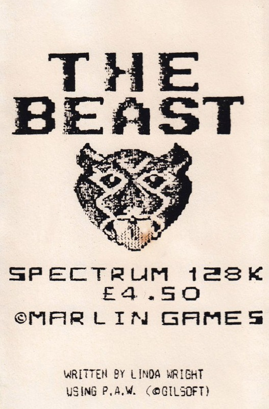
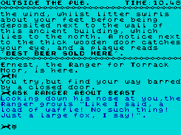

The Beast


{kind=link}

| Publisher: | Marlin Games |
| Price: | £4.50 |
| Year: | 1988 |
| Source: | CRASH, Issue 59 |

The title conjures up visions of evil and the much-used demonic 666 theme, and although The Beast is not concerned with the occult, the mysterious goings-on it details in a village have a distinctly sinister flavour.
This homegrown, PAWed adventure spins a yarn based roughly on the recent perplexing case of The Beast Of Exmoor. You are a bored reporter working on the rag, The Lowsea Gazette and are hassled to a great extent by your grouchy editor (sounds familiar), Mr C D Slime (geddit?!). He is also fed up with the run-of-the-mill reports on what the local Women’s Institute is up to, and wants a really big story to splash all over the front page (sounds a bit like the Ludlow Liar to me — Ed). Well, this seems an impossible task; after all, nothing ever happens in this quiet part of the world, or does it?
An envelope is lying on your desk, containing a letter from one Rose Myrtle, who tells of strange happenings on the moors near the village of Puddlecombe. A strange black animal has been sighted and one of the local farmer’s sheep has been mauled to death.

At last you have a decent story to investigate and soon set off on the bus to Puddlecombe (your stingy editor won’t give you a company car). Arriving in the middle of the village, a suitably rustic atmosphere is soon created by the verbose, but not waffling, descriptions of the local shops — there’s even an estate agent (remarkable for such a tiny village). You are immediately greeted by the Ranger, who spontaneously tells you that all these Beast rumours are pure nonsense.
It is at this point that it becomes apparent that to successfully track down the elusive Beast (if it exists), you must use all your powers of investigative journalism. By asking questions of the various colourful characters who inhabit the village (in the form of ASK someone ABOUT something), a picture of the recent, curious events is built up.
And apart from listening to the local people’s gossip, more conventional adventuring techniques are used to find clues in typical Agatha Christie style, bringing an air of suspense to the proceedings. Virtually all objects may be examined so the ability to abbreviate the EXAMINE command to X saves much typing. Conveniently, the many objects collected can be put in your pocket or in one of two containers which can be found; this reduces the number of objects carried allowing you to effectively hold more things simultaneously.
As well as the shops and businesses in the high street, which include the obligatory pub (the barman is only too happy to help you with your inquiries and sell you a pint of beer!), the ‘tiny’ village also contains its own church, scout hall, church hall and all the homes of the many characters — these can only be entered on invitation (you’re not one of those devious tabloid journalists, or an even more unscrupulous CRASH writer!). Access to businesses is also restricted to their respective opening hours, while the veterinary surgeon won’t see you unless you’ve brought along a pet!
There is just so much to do and find out in this enchanting village, before you’re ready to tackle the utter contrast of the damp, depressing moor where the Beast is rumoured to be lurking. The loquacious (LMLWD) characters don’t just stay in the same location either — they wander around the place, adding even more realism to the totally engrossing plot.
If all this sounds a bit too creepy, the dark mood of the excellent scenario is marginally lightened by the odd bit of acidic humour, but not so much as to ruin the excellent, menacing aura. Surprisingly, hardly any use is made of the PAW’s excellent graphics facilities, although a few ill-drawn pictures might have ruined the atmosphere, as well as wasting valuable memory. Nevertheless, the presentation is very neat with a legible, redefined character set and a Rainbird-style location title at the top of the screen, also displaying a clock — every action uses up a minute. This increases the difficulty of what is already a tough adventure, but the inclusion of a option aids progress.
The Beast represents a major achievement in homegrown adventures, bringing together the sophistication of the PAW parser and an intricately woven plot to produce an interactive adventure of a very high quality indeed. It is available direct from the author.
| Overall: | 91% |